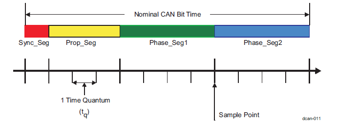

MCAN
The Controller Area Network (CAN) is a serial communication protocol which efficiently supports distributed real-time control. The MCAN module supports both classic CAN and CAN FD (CAN with Flexible Data-Rate) specifications. CAN FD feature allows high throughput and increased payload per data frame. The driver provides API’s to configure the MCAN module. Below are the high level features supported by the MCAN driver.
Features Supported
MCAN module conforms with CAN Protocol 2.0 A, B and ISO 11898-1:2015
Configure CAN FD mode to support Full CAN FD (up to 64 data bytes)
Transmit and Receive classic CAN and and CAN FD message formats
Configure Up to 32 dedicated Transmit Buffers
Configure Transmit FIFO, up to 32 elements(Buffer + FIFO combined up to 32)
Configure Transmit Event FIFO, up to 32 elements
Configure Up to 64 dedicated Receive Buffers
Configure Two configurable Receive FIFOs, up to 64 elements each
Configure Up to 128 Standard Id filter elements
Configure Up to 64 Extended Id filter elements
Configure Bit timing parameters
Configure Global filter to receive non-matching messages
Configure Maskable interrupts and two interrupt lines
Api’s to read protocol status register(useful in case of communication failures)
SysConfig Features
Note
It is strongly recommend to use SysConfig where it is available instead of using direct SW API calls. This will help simplify the SW application and also catch common mistakes early in the development cycle.
SysConfig can be used to configure below parameters apart from common configuration like Clock, MPU, RAT and others.
MCAN instances and pin configurations.
Defualt values for bit time parameter initialization set by MCAN_initSetBitTimeParams
Features NOT Supported
DMA mode of operation
Usage
Message Ram Initialization
The MCAN module has implemented Message RAM. The main purpose of the Message RAM is to store:
Receive Messages
Transmit Messages
Tx Event Elements
Message ID Filter Elements
User just needs to configure the number of elements required based on their usecase.
Acceptance filtering
The MCAN module is capable to configure two sets of acceptance filters - one set for standard and one set for extended identifiers. These filters can be assigned to an Rx Buffer or to one of the two Rx FIFOs. The main features of the filter elements are:
Each filter element can be configured as:
Range Filter (from - to)
Filter for specific IDs (for one or two dedicated IDs)
Classic Bit Mask Filter
Each filter element can be enabled/disabled individually
Each filter element can be configured for acceptance or rejection filtering
Filters are checked sequentially and execution (acceptance filtering procedure) stops at the first matching filter element or when the end of the filter list is reached
Depending on the configuration of the filter element if filter matches, one of the following actions is performed:
Received frame is stored in FIFO 0 or FIFO 1
Received frame is stored in Rx Buffer
To receive all the messages without acceptance filtering, you need to configure anfe and anfs fields of Global filter register. Please refer section “Acceptance Filtering” in technical reference manual for more details.
Filter Types
Basically there are 3 types of filter which MCAN module supports.
Range Filter
Each filter element can be configured to operate as Range Filter (Standard Filter Type SFT = 00/Extended Filter Type EFT = 00). The filter matches for all received message frames with IDs in the range from SFID1 to SFID2 (SFID2 >= SFID1) and respectively in the range from EFID1 to EFID2 (EFID2 >= EFID1).
There are two options for range filtering of extended frames:
Extended Filter Type EFT = 00: The Extended ID AND Mask is used for Range Filtering. The Message ID of received frames is ANDed with the Extended ID AND Mask before the range filter is applied.
Extended Filter Type EFT = 11: The Extended ID AND Mask (MCAN_XIDAM) is not used for Range Filtering.
Filter for specific IDs
Each filter element can be configured to filter one or two dedicated Message IDs (Standard Filter Type SFT =01/ Extended Filter Type EFT =01). To filter only one specific Message ID, the filter element has to be configured with SFID1 = SFID2 respectively EFID1 = EFID2.
Classic Bit Mask Filter
Classic bit mask filtering can filter groups of Message IDs (Standard Filter Type SFT =10/Extended Filter Type EFT =10). This is done by masking single bits of a received Message ID. In this case SFID1/EFID1 element is used as Message ID filter, while SFID2/EFID2 element is used as filter mask. A 0 bit at the filter mask (SFID2/EFID2) will mask out the corresponding bit position of the configured Message ID filter (SFID1/EFID1) and the value of the received Message ID at that bit position is not relevant for acceptance filtering. Only those bits of the received Message ID where the corresponding mask bits are 1 are relevant for acceptance filtering. There are two interesting cases:
All mask bits are 1: a match occurs only when the received Message ID and the configured Message ID filter are identical.
All mask bits are 0: all Message IDs match.
Note
For example: if sfid1(message id) is 0xC0 and sfid2(mask) is 0xF then all the messages ranged from 0xC0 to 0xCF will be received. In case you want to receive all messages, sfid2(mask) need to be set to 0x0.
Filter Element Configuration
Up to 128 filter elements can be configured for 11-bit standard IDs and 64 filter elements can be configured for 29-bit extended IDs. Each filter element have 4 following parameters to be configured.
sfid1/efid1 : Defines the ID of the message to be stored
sfid2/efid2 : Defines the second ID.This field has a different meaning depending on sfec/efec. In case buffer is configured then sfid2/efid2 filters to Rx buffer number[0-63]
sfec/efec : Place to store message(Buffer/FIFO0/FIFO1)
sft/eft : Filter Types
Tx Buffer/FIFO Configuration
The MCAN module supports up to 32 Tx Buffers. These Tx Buffers can be configured as dedicated Tx Buffers, Tx FIFO and as combination of dedicated Tx Buffers/Tx FIFO. In the message RAM, FIFO is allocated only after the number of buffers allocated. i.e.
txFifoStartAddr = txBufStartAddr + txBufCnt;
Dedicated Tx Buffers are intended for message transmission under complete control of the Host CPU. There are two options:
Each dedicated Tx Buffer is configured with a specific Message ID.
Two or more dedicated Tx Buffers are configured with the same Message ID. In this case the Tx Buffer with the lowest buffer number is transmitted first.
Note
Please refer DRV_MCAN_MODULE for more details and Example Usage for code snippets.
Important Usage Guidelines
Bit Rate Calculation

MCAN Bit Timing Diagram
Formula for bit-rate is:
bit rate(bits per second) = (CAN clock in Hz) / BRP / (1 + TSEG1 + TSEG2)
Sampling Point(%) = (1 + TSEG1) / (1 + TSEG1 + TSEG2)
CAN clock is functional clock of CAN module (80MHz)
BRP: Bit rate pre-scalar value
TSEG1, TSEG2: Time Segments expressed in terms of number of Tq(Time Quantum)
Tq: the period of the CAN module functional clock.
Sampling point is the point of time at which the bus level is read and interpreted as the value at that respective time. Typical value of sampling point is between 75-90%.
Bit timing can be configured by calling the #MCAN_setBitTime function passing the #MCAN_BitTimingParams structure.
The default initialization for the #MCAN_BitTimingParams strcuture is done by calling #MCAN_initSetBitTimeParams.
Sysconfig provides an interface to program the default initialization values set in #MCAN_initSetBitTimeParams function. under Global Parameters for MCAN module. This is common for all instances of MCAN.
The default parameter corresponds to 1Mbps of NOM bit rate and 5Mbps of DATA bit rate.
If the application needs different bit timing for any instance of MCAN it should appropriately update the #MCAN_BitTimingParams structure passed to #MCAN_setBitTime API.
Note
Values selected in Sysconfig / the values set in structure are directly programmed in MCAN register bit fields. The actual interpretation by the hardware of this value is such that one more than the value programmed.
Default values used for NOM bit rate (1Mbps) are:
MCAN_BitTimingParams::nomRatePrescalar = 7 (BRP = 8)
MCAN_BitTimingParams::nomTimeSeg1 = 5 (TSEG1 = 6)
MCAN_BitTimingParams::nomTimeSeg2 = 2 (TSEG2 = 3)
bit rate = 80MHz / 8 / (1 + 6 + 3) = 1Mbps
CAN bus termination
CAN bus termination is needed to minimize the reflection, to reduce the noise. The transmission lines must be terminated to make sure noise does not cause communication failure.
There are two types of CAN termination:
Standard termination: The traditional 120 Ohm resistor(RL) is used on each end of the bus.
Split Termination Two 60 Ohm(RL/2) resistors along with capacitor(CL) is used to suppress the noise at both ends of the bus. Typical value of CL for 1.1 Mbps is 4.7 nF.
Please note RL and CL values are dependent on a signaling rate.
Transceiver Delay Compensation Value(TDCV)
CAN is a broadcast protocol, every node on the bus sees the message on the bus even if it is Tx node. Tx node uses this data on Rx line for integrity and error checks locally. Overview of a bit flow through different stages in communication is:
CAN module core -> CAN module Tx line -> SoC Tx Pin/PAD -> Transceiver Out -> CAN Bus -> Transceiver In -> SoC Rx Pin/PAD -> CAN module Rx line -> CAN module core
In the above path flow, introduces latency between data going out from Tx line to data coming in on Rx line. Major part of this latency comes from Transceiver. Hence it is called Transceiver Delay Compensation Value. This needs to programmed as controller has to adjust it’s Secondary Sampling Point(SSP) for sampling Rx line at the correct time.
MCAN provides functionality to measure delay between transition on Tx line and same transition for Rx line. User need not to measure transceiver loop-back delay or refer transceiver documentation for the same. User just needs to program SSP position which could be same as Sampling Point(SP).
Things to consider/check before sending a message over CAN bus
Make sure following is done/checked before attempting communication on bus:
ISO-11898 compatible transceivers have to be connected to a CAN bus.
CAN bus should have proper termination.
CAN_L lines from nodes shall be connected together and same goes for CAN_H and GND lines as well.
Make sure all connections are firm and all pins properly connected.
All node on the bus are configured for same bit rate.
In case of CAN FD, make sure Transceiver Delay Compensation value is correctly programmed.
CAN module is powered up and configured properly.
SoC pins/PADs for CAN are configured properly.
Debug CAN communication failure
When any CAN message transmission/reception fails, controller updates LEC (Last Error Code) and DLEC (Data Phase Last Error Code) fields in status register(‘MCAN_PSR’)
LEC: this field is updated when error happened in arbitration phase in case of CAN FD message or during full message for classic CAN message.
DLEC: this field is updated when error happened in data phase in case of CAN FD message.
LEC/DLEC fields have following errors:
Stuff Error
Node type: Rx
Description: More than 5 equal bits in a sequence have occurred in a part of a received message where this is not allowed.
Check if all the nodes on the bus have same bit-rate.
Form Error
Node type: Rx
Description: A fixed format part of a received frame has the wrong format.
This could happen if receiver node have drift in CAN functional clock momentarily or bus have interference.
Ack Error
Node Type: Tx
Description: The message transmitted by the MCAN module was not acknowledged by another node.
CAN bus should have more than one nodes(apart for transmitting node) up and running(not in sleep or power down state).
Bit1 Error and Bit0 Error
Node Type: Tx
Description:
Bit1 Error: During the transmission of a message (with the exception of the arbitration field), the device wanted to send a recessive level (bit of logical value 1), but the monitored bus value was dominant.
Bit0 Error: During the transmission of a message (acknowledge bit, active error flag, or overload flag), the device wanted to send a dominant level (data or identifier bit logical value 0), but the monitored bus value was recessive.
Tx and Rx lines are sampled at Sampling Point (SP) and Secondary Sampling Point (SSP) respectively have different values. Position of SSP is configurable.
This can happen in following cases:
Check if tx and rx pins are configured properly. These pins should be pulled high by default i.e. when bus is idle(no communication is going on).
Check if CAN transceiver is enabled.
For LEC:
If configured SP is too large for given node.
Segment after SP(TSEG2) should be large enough to compensate for Transceiver Delay.
For DLEC:
Configured Transceiver Delay Compensation value is less/more than required.
CRC Error
Node type: Rx
Description: The CRC check sum of a received message was incorrect. The CRC of an incoming message does not match with the CRC calculated from the received data.
This could happen if receiver node have drift in CAN functional clock momentarily or bus have interference.
BusOff Recovery Sequence
Below is directly adopted from the Bosch app note.
The MCAN enters Busoff state according to CAN protocol conditions. The Busoff state is reported by setting PSR.BO. Additionally, the MCAN sets CCCR.INIT to stop all CAN operation. To restart CAN operation, the application software needs to clear CCCR.INIT. After CCCR.INIT is cleared, the MCAN’s CAN state machine waits for the completion of the Busoff Recovery Sequence according to CAN protocol (at least 128 occurrences of Bus Idle Condition, which is the detection of 11 consecutive recessive bits). In the MCAN User’s Manual the description of Bus_Off recovery states that “Once CCCR.INIT has been cleared by the CPU, the device will then wait for 129 occurrences of Bus Idle (129 * 11 consecutive recessive bits) before resuming normal operation. At the end of the Bus_Off recovery sequence, the Error Management Counters will be reset”.
Example Usage
Include the below file to access the APIs
#include <drivers/mcan.h>
MCAN Interrupt Registration
int32_t status = SystemP_SUCCESS;
HwiP_Params hwiPrms;
/* Register interrupt */
HwiP_Params_init(&hwiPrms);
hwiPrms.intNum = APP_MCAN_INTR_NUM;
hwiPrms.callback = &App_mcanIntrISR;
status = HwiP_construct(&gMcanHwiObject, &hwiPrms);
DebugP_assert(status == SystemP_SUCCESS);
MCAN Message RAM Configuration
MCAN_initMsgRamConfigParams(msgRAMConfigParams);
/* Configure the user required msg ram params */
msgRAMConfigParams->lss = APP_MCAN_STD_ID_FILTER_CNT;
msgRAMConfigParams->lse = APP_MCAN_EXT_ID_FILTER_CNT;
msgRAMConfigParams->txBufCnt = APP_MCAN_TX_BUFF_CNT;
msgRAMConfigParams->txFIFOCnt = APP_MCAN_TX_FIFO_CNT;
/* Buffer/FIFO mode is selected */
msgRAMConfigParams->txBufMode = MCAN_TX_MEM_TYPE_BUF;
msgRAMConfigParams->txEventFIFOCnt = APP_MCAN_TX_EVENT_FIFO_CNT;
msgRAMConfigParams->rxFIFO0Cnt = APP_MCAN_FIFO_0_CNT;
msgRAMConfigParams->rxFIFO1Cnt = APP_MCAN_FIFO_1_CNT;
/* FIFO blocking mode is selected */
msgRAMConfigParams->rxFIFO0OpMode = MCAN_RX_FIFO_OPERATION_MODE_BLOCKING;
msgRAMConfigParams->rxFIFO1OpMode = MCAN_RX_FIFO_OPERATION_MODE_BLOCKING;
status = MCAN_calcMsgRamParamsStartAddr(msgRAMConfigParams);
DebugP_assert(status == CSL_PASS);
MCAN Rx Standard Filter Element Configuration
/* sfid1 defines the ID of the standard message to be stored. */
stdFiltElem->sfid1 = APP_MCAN_STD_ID;
/* As buffer mode is selected, sfid2 should be bufNum[0 - 63] */
stdFiltElem->sfid2 = bufNum;
/* Store message in buffer */
stdFiltElem->sfec = MCAN_STD_FILT_ELEM_BUFFER;
/* Below configuration is ignored if message is stored in buffer */
stdFiltElem->sft = MCAN_STD_FILT_TYPE_RANGE;
MCAN Tx Message Configuration
/* Initialize message to transmit */
MCAN_initTxBufElement(txMsg);
/* Standard message identifier 11 bit, stored into ID[28-18] */
txMsg->id = ((APP_MCAN_STD_ID & MCAN_STD_ID_MASK) << MCAN_STD_ID_SHIFT);
txMsg->dlc = MCAN_DATA_SIZE_64BYTES; /* Payload size is 64 bytes */
txMsg->fdf = TRUE; /* CAN FD Frame Format */
txMsg->xtd = FALSE; /* Extended id not configured */
for (i = 0U; i < MCAN_MAX_PAYLOAD_BYTES; i++)
{
txMsg->data[i] = i;
}
MCAN Message Transmit/Receive
/* Configure Tx Msg to transmit */
App_mcanConfigTxMsg(&txMsg);
/* Select buffer number, 32 buffers available */
bufNum = 0U;
/* Enable Transmission interrupt for the selected buf num,
* If FIFO is used, then need to send FIFO start index until FIFO count */
status = MCAN_txBufTransIntrEnable(gMcanBaseAddr, bufNum, (uint32_t)TRUE);
DebugP_assert(status == CSL_PASS);
/* Write message to Msg RAM */
MCAN_writeMsgRam(gMcanBaseAddr, MCAN_MEM_TYPE_BUF, bufNum, &txMsg);
/* Add request for transmission, This function will trigger transmission */
status = MCAN_txBufAddReq(gMcanBaseAddr, bufNum);
DebugP_assert(status == CSL_PASS);
/* Wait for Tx completion */
SemaphoreP_pend(&gMcanTxDoneSem, SystemP_WAIT_FOREVER);
MCAN_getProtocolStatus(gMcanBaseAddr, &protStatus);
/* Checking for Tx Errors */
if (((MCAN_ERR_CODE_NO_ERROR != protStatus.lastErrCode) ||
(MCAN_ERR_CODE_NO_CHANGE != protStatus.lastErrCode)) &&
((MCAN_ERR_CODE_NO_ERROR != protStatus.dlec) ||
(MCAN_ERR_CODE_NO_CHANGE != protStatus.dlec)) &&
(0U != protStatus.pxe))
{
DebugP_assert(FALSE);
}
/* Wait for Rx completion */
SemaphoreP_pend(&gMcanRxDoneSem, SystemP_WAIT_FOREVER);
/* Checking for Rx Errors */
MCAN_getErrCounters(gMcanBaseAddr, &errCounter);
DebugP_assert((0U == errCounter.recErrCnt) &&
(0U == errCounter.canErrLogCnt));
/* Get the new data staus, indicates buffer num which received message */
MCAN_getNewDataStatus(gMcanBaseAddr, &newDataStatus);
MCAN_clearNewDataStatus(gMcanBaseAddr, &newDataStatus);
/* Select buffer and fifo number, Buffer is used in this app */
bufNum = 0U;
fifoNum = MCAN_RX_FIFO_NUM_0;
bitPos = (1U << bufNum);
if (bitPos == (newDataStatus.statusLow & bitPos))
{
MCAN_readMsgRam(gMcanBaseAddr, MCAN_MEM_TYPE_BUF, bufNum, fifoNum, &rxMsg);
}
else
{
DebugP_assert(FALSE);
}
/* Compare Tx/Rx data */
if (((txMsg.id >> APP_MCAN_STD_ID_SHIFT) & APP_MCAN_STD_ID_MASK) ==
((rxMsg.id >> APP_MCAN_STD_ID_SHIFT) & APP_MCAN_STD_ID_MASK))
{
for (i = 0U; i < MCAN_MAX_PAYLOAD_BYTES; i++)
{
if (txMsg.data[i] != rxMsg.data[i])
{
DebugP_logError("Data mismatch !!!\r\n");
DebugP_assert(FALSE);
}
}
}
else
{
DebugP_logError("Message ID mismatch !!!\r\n");
DebugP_assert(FALSE);
}
API Reference
This file contains the prototypes of the APIs present in the device abstraction layer file of MCAN. This also contains some related macros.
MCAN STD, EXT and TX/RX Elememt Size
-
MCAN_MSG_RAM_STD_ELEM_SIZE
Macros to represent the MCAN STD, EXT and TX/RX Elememt Size.
Standard ID Filter Element Size
-
MCAN_MSG_RAM_EXT_ELEM_SIZE
Extended ID Filter Element Size
-
MCAN_MSG_RAM_TX_RX_ELEM_SIZE
Tx/Rx Element Size. 18 words = 18 * 4 = 72 bytes: 8 bytes of header and 64 bytes of data
MCAN RX FIFO Operation Mode
-
MCAN_RX_FIFO_OPERATION_MODE_BLOCKING
Macros to represent the MCAN RX FIFO mode of operation.
MCAN Blocking mode
-
MCAN_RX_FIFO_OPERATION_MODE_OVERWRITE
MCAN Overwrite mode
MCAN Tx Mem type
-
MCAN_TX_MEM_TYPE_BUF
Macros to represent the MCAN Tx Message RAM type.
MCAN Tx Msg RAM buffers/FIFO
-
MCAN_TX_MEM_TYPE_QUEUE
MCAN Tx Msg RAM Queue
MCAN Data Length Size
-
MCAN_DATA_SIZE_0BYTES
Macros to represent MCAN Data Size.
0 byte data field
-
MCAN_DATA_SIZE_1BYTES
1 byte data field
-
MCAN_DATA_SIZE_2BYTES
2 byte data field
-
MCAN_DATA_SIZE_3BYTES
3 byte data field
-
MCAN_DATA_SIZE_4BYTES
4 byte data field
-
MCAN_DATA_SIZE_5BYTES
5 byte data field
-
MCAN_DATA_SIZE_6BYTES
6 byte data field
-
MCAN_DATA_SIZE_7BYTES
7 byte data field
-
MCAN_DATA_SIZE_8BYTES
8 byte data field
-
MCAN_DATA_SIZE_12BYTES
12 byte data field
-
MCAN_DATA_SIZE_16BYTES
16 byte data field
-
MCAN_DATA_SIZE_20BYTES
20 byte data field
-
MCAN_DATA_SIZE_24BYTES
24 byte data field
-
MCAN_DATA_SIZE_32BYTES
32 byte data field
-
MCAN_DATA_SIZE_48BYTES
48 byte data field
-
MCAN_DATA_SIZE_64BYTES
64 byte data field
MCAN Standard Filter Element Configuration
-
MCAN_STD_FILT_ELEM_DISABLE
Macros to represent Standard Filter Element Configuration.
Disable filter element
-
MCAN_STD_FILT_ELEM_FIFO0
Store in Rx FIFO 0 if filter matches
-
MCAN_STD_FILT_ELEM_FIFO1
Store in Rx FIFO 1 if filter matches
-
MCAN_STD_FILT_ELEM_REJECT
Reject ID if filter matches
-
MCAN_STD_FILT_ELEM_SET_PRIORITY
Set priority if filter matches
-
MCAN_STD_FILT_ELEM_SET_PRIORITY_FIFO0
Set priority and store in FIFO 0 if filter matches
-
MCAN_STD_FILT_ELEM_SET_PRIORITY_FIFO1
Set priority and store in FIFO 1 if filter matches
-
MCAN_STD_FILT_ELEM_BUFFER
Store into Rx Buffer or as debug message, configuration of SFT[1:0] ignored
MCAN Standard Filter Type
-
MCAN_STD_FILT_TYPE_RANGE
Macros to represent Standard Filter Types.
Range filter from SFID1 to SFID2 (SFID2 ≥ SFID1)
-
MCAN_STD_FILT_TYPE_DUAL
Dual ID filter for SFID1 or SFID2
-
MCAN_STD_FILT_TYPE_CLASSIC
Classic filter: SFID1 = filter, SFID2 = mask
-
MCAN_STD_FILT_TYPE_DISABLE
Filter element disabled
MCAN Extended Filter Element Configuration
-
MCAN_EXT_FILT_ELEM_DISABLE
Macros to represent Extended Filter Element Configuration.
Disable filter element
-
MCAN_EXT_FILT_ELEM_FIFO0
Store in Rx FIFO 0 if filter matches
-
MCAN_EXT_FILT_ELEM_FIFO1
Store in Rx FIFO 1 if filter matches
-
MCAN_EXT_FILT_ELEM_REJECT
Reject ID if filter matches
-
MCAN_EXT_FILT_ELEM_SET_PRIORITY
Set priority if filter matches
-
MCAN_EXT_FILT_ELEM_SET_PRIORITY_FIFO0
Set priority and store in FIFO 0 if filter matches
-
MCAN_EXT_FILT_ELEM_SET_PRIORITY_FIFO1
Set priority and store in FIFO 1 if filter matches
-
MCAN_EXT_FILT_ELEM_BUFFER
Store into Rx Buffer or as debug message, configuration of SFT[1:0] ignored
MCAN Extended Filter Type
-
MCAN_EXT_FILT_TYPE_RANGE
Macros to represent Extended Filter Types.
Range filter from SFID1 to SFID2 (SFID2 ≥ SFID1)
-
MCAN_EXT_FILT_TYPE_DUAL
Dual ID filter for SFID1 or SFID2
-
MCAN_EXT_FILT_TYPE_CLASSIC
Classic filter: SFID1 = filter, SFID2 = mask
-
MCAN_EXT_FILT_TYPE_DISABLE
Range filter from EFID1 to EFID2 (EFID2 ≥ EFID1), XIDAM mask not applied
MCAN Interrupt Line no
-
MCAN_INTR_LINE_NUM_0
MCAN interrupt line 0
-
MCAN_INTR_LINE_NUM_1
MCAN interrupt line 1
-
typedef uint32_t MCAN_IntrLineNum
Enum to select the MCAN interrupt lines.
MCAN Id Type
-
MCAN_ID_TYPE_11_BIT
11bit MCAN Standard Identifier
-
MCAN_ID_TYPE_29_BIT
29bit MCAN Extended Identifier
-
typedef uint32_t MCAN_IdType
Enum to represent the MCAN Identifier Type.
MCAN Operation Mode
-
MCAN_OPERATION_MODE_NORMAL
MCAN normal mode
-
MCAN_OPERATION_MODE_SW_INIT
MCAN SW initialization mode
-
typedef uint32_t MCAN_OperationMode
Enum to represent the MCAN mode of operation.
MCAN Mem type
-
MCAN_MEM_TYPE_BUF
MCAN Msg RAM buffers
-
MCAN_MEM_TYPE_FIFO
MCAN Msg RAM FIFO/Queue
-
typedef uint32_t MCAN_MemType
Enum to represent the MCAN Message RAM type.
MCAN Rx FIFO Number
-
MCAN_RX_FIFO_NUM_0
MCAN Rx FIFO 0
-
MCAN_RX_FIFO_NUM_1
MCAN Rx FIFO 1
-
typedef uint32_t MCAN_RxFIFONum
Enum to represent the MCAN Rx FIFO number.
MCAN Pin Type
-
MCAN_PIN_TYPE_RX
MCAN Rx Pin
-
MCAN_PIN_TYPE_TX
MCAN Tx Pin
-
typedef uint32_t MCAN_PinType
Enum to represent the MCAN pin type.
MCAN Element Size
-
MCAN_ELEM_SIZE_8BYTES
8 byte data field
-
MCAN_ELEM_SIZE_12BYTES
12 byte data field
-
MCAN_ELEM_SIZE_16BYTES
16 byte data field
-
MCAN_ELEM_SIZE_20BYTES
20 byte data field
-
MCAN_ELEM_SIZE_24BYTES
24 byte data field
-
MCAN_ELEM_SIZE_32BYTES
32 byte data field
-
MCAN_ELEM_SIZE_48BYTES
48 byte data field
-
MCAN_ELEM_SIZE_64BYTES
64 byte data field
-
typedef uint32_t MCAN_ElemSize
Enum to represent FIFO/Buffer element Size.
MCAN Timeout select
-
MCAN_TIMEOUT_SELECT_CONT
Continuous operation Mode
-
MCAN_TIMEOUT_SELECT_TX_EVENT_FIFO
Timeout controlled by Tx Event FIFO
-
MCAN_TIMEOUT_SELECT_RX_FIFO0
Timeout controlled by Rx FIFO 0
-
MCAN_TIMEOUT_SELECT_RX_FIFO1
Timeout controlled by Rx FIFO 1
-
typedef uint32_t MCAN_TimeOutSelect
Enum to represent the MCAN time-out counter configuration.
MCAN Interrupt Source
-
MCAN_INTR_SRC_RX_FIFO0_NEW_MSG
Rx FIFO 0 New Message interrupt
-
MCAN_INTR_SRC_RX_FIFO0_WATERMARK
Rx FIFO 0 Watermark Reached interrupt
-
MCAN_INTR_SRC_RX_FIFO0_FULL
Rx FIFO 0 Full interrupt
-
MCAN_INTR_SRC_RX_FIFO0_MSG_LOST
Rx FIFO 0 Message Lost interrupt
-
MCAN_INTR_SRC_RX_FIFO1_NEW_MSG
Rx FIFO 1 New Message interrupt
-
MCAN_INTR_SRC_RX_FIFO1_WATERMARK
Rx FIFO 1 Watermark Reached interrupt
-
MCAN_INTR_SRC_RX_FIFO1_FULL
Rx FIFO 1 Full interrupt
-
MCAN_INTR_SRC_RX_FIFO1_MSG_LOST
Rx FIFO 1 Message Lost interrupt
-
MCAN_INTR_SRC_HIGH_PRIO_MSG
High Priority Message interrupt
-
MCAN_INTR_SRC_TRANS_COMPLETE
Transmission Completed interrupt
-
MCAN_INTR_SRC_TRANS_CANCEL_FINISH
Transmission Cancellation Finished interrupt
-
MCAN_INTR_SRC_TX_FIFO_EMPTY
Tx FIFO Empty interrupt
-
MCAN_INTR_SRC_TX_EVT_FIFO_NEW_ENTRY
Tx Event FIFO New Entry interrupt
-
MCAN_INTR_SRC_TX_EVT_FIFO_WATERMARK
Tx Event FIFO Watermark Reached interrupt
-
MCAN_INTR_SRC_TX_EVT_FIFO_FULL
Tx Event FIFO Full interrupt
-
MCAN_INTR_SRC_TX_EVT_FIFO_ELEM_LOST
Tx Event FIFO Element Lost interrupt
-
MCAN_INTR_SRC_TIMESTAMP_WRAPAROUND
Timestamp Wraparound interrupt
-
MCAN_INTR_SRC_MSG_RAM_ACCESS_FAILURE
Message RAM Access Failure interrupt
-
MCAN_INTR_SRC_TIMEOUT
Timeout Occurred interrupt
-
MCAN_INTR_SRC_DEDICATED_RX_BUFF_MSG
Message stored to Dedicated Rx Buffer interrupt
-
MCAN_INTR_SRC_BIT_ERR_CORRECTED
Bit Error Corrected interrupt
-
MCAN_INTR_SRC_BIT_ERR_UNCORRECTED
Bit Error Uncorrected interrupt
-
MCAN_INTR_SRC_ERR_LOG_OVRFLW
Error Logging Overflow interrupt
-
MCAN_INTR_SRC_ERR_PASSIVE
Error Passive interrupt
-
MCAN_INTR_SRC_WARNING_STATUS
Warning Status interrupt
-
MCAN_INTR_SRC_BUS_OFF_STATUS
Bus_Off Status interrupt
-
MCAN_INTR_SRC_WATCHDOG
Watchdog Interrupt interrupt
-
MCAN_INTR_SRC_PROTOCOL_ERR_ARB
Protocol Error in Arbitration Phase interrupt
-
MCAN_INTR_SRC_PROTOCOL_ERR_DATA
Protocol Error in Data Phase interrupt
-
MCAN_INTR_SRC_RES_ADDR_ACCESS
Access to Reserved Address interrupt
-
typedef uint32_t MCAN_IntrSrc
Enum for MCAN interrupts.
MCAN Ecc Error Type
-
MCAN_ECC_ERR_TYPE_SEC
ECC Single Error Correction
-
MCAN_ECC_ERR_TYPE_DED
ECC Single Error Detection
-
typedef uint32_t MCAN_ECCErrType
Enum to represent the ECC Error Types.
MCAN Loopback Mode
-
MCAN_LPBK_MODE_INTERNAL
Internal Loop Back Mode This mode can be used for hot self-test and this mode will not affect bus state.
-
MCAN_LPBK_MODE_EXTERNAL
External Loop Back Mode In this mode, MCAN the M_CAN treats its own transmitted messages as received messages and stores them (if they pass acceptance filtering) into an Rx Buffer or an Rx FIFO. This mode will affect bus state
-
typedef uint32_t MCAN_LpbkMode
Enum to select the MCAN Loopback mode.
MCAN Com State
-
MCAN_COM_STATE_SYNCHRONIZING
MCAN is synchronizing on CAN communication
-
MCAN_COM_STATE_IDLE
MCAN is neither receiver nor transmitter
-
MCAN_COM_STATE_RECEIVER
MCAN is operating as receiver
-
MCAN_COM_STATE_TRANSMITTER
MCAN is operating as transmitter
-
typedef uint32_t MCAN_ComState
Enum to represent MCAN’s communication state.
MCAN Error Code
-
MCAN_ERR_CODE_NO_ERROR
No error occurred since LEC has been reset by successful reception or transmission.
-
MCAN_ERR_CODE_STUFF_ERROR
More than 5 equal bits in a sequence have occurred in a part of a received message where this is not allowed.
-
MCAN_ERR_CODE_FORM_ERROR
A fixed format part of a received frame has the wrong format.
-
MCAN_ERR_CODE_ACK_ERROR
The message transmitted by the M_CAN was not acknowledged by another node.
-
MCAN_ERR_CODE_BIT1_ERROR
During the transmission of a message (with the exception of the arbitration field), the device wanted to send a recessive level (bit of logical value 1)) but the monitored bus value was dominant.
-
MCAN_ERR_CODE_BIT0_ERROR
During the transmission of a message (or acknowledge bit, or active error flag, or overload flag), the device wanted to send a dominant level (data or identifier bit logical value 0), but the monitored bus value was recessive. During Bus_Off recovery this status is set each time a sequence of 11 recessive bits has been monitored. This enables the CPU to monitor the proceeding of the Bus_Off recovery sequence (indicating the bus is not stuck at dominant or continuously disturbed).
-
MCAN_ERR_CODE_CRC_ERROR
The CRC check sum of a received message was incorrect. The CRC of an incoming message does not match with the CRC calculated from the received data.
-
MCAN_ERR_CODE_NO_CHANGE
Any read access to the Protocol Status Register re-initializes the LEC to 7. When the LEC shows the value 7, no CAN bus event was detected since the last CPU read access to the Protocol Status Register.
-
typedef uint32_t MCAN_ErrCode
Enum to represent MCAN’s Error Code.
Defines
-
MCAN_INTR_MASK_ALL
Macro defines mask for all the interrupts status for MCAN.
-
MCAN_MAX_PAYLOAD_BYTES
Maximum payload supported by CAN-FD protocol in bytes.
Functions
-
void MCAN_reset(uint32_t baseAddr)
This API is used to initiate reset for MCAN module.
- Parameters:
baseAddr – Base Address of the MCAN Registers.
-
uint32_t MCAN_isInReset(uint32_t baseAddr)
This function checks if the MCAN module is in Reset.
- Parameters:
baseAddr – Base Address of the MCAN Registers.
- Return values:
state – Returns TRUE if reset is in progress. Else returns FALSE.
-
uint32_t MCAN_isFDOpEnable(uint32_t baseAddr)
This API will return flexible data rate operation status MCAN module.
- Parameters:
baseAddr – Base Address of the MCAN Registers.
- Returns:
state Returns TRUE if flexible data rate operation is enabled. Else returns FALSE.
-
uint32_t MCAN_isMemInitDone(uint32_t baseAddr)
This function checks if the memory initialization is done for MCAN module.
- Parameters:
baseAddr – Base Address of the MCAN Registers.
- Return values:
state – Returns TRUE if memory initialization is done. Else returns FALSE.
-
void MCAN_setOpMode(uint32_t baseAddr, uint32_t mode)
This API will set MCAN module mode of operation.
- Parameters:
baseAddr – Base Address of the MCAN Registers.
mode – Mode of operation. Refer enum MCAN_OperationMode.
-
uint32_t MCAN_getOpMode(uint32_t baseAddr)
This API will return MCAN module mode of operation.
- Parameters:
baseAddr – Base Address of the MCAN Registers.
- Returns:
mode Mode of operation. Refer enum MCAN_OperationMode.
-
int32_t MCAN_init(uint32_t baseAddr, const MCAN_InitParams *initParams)
This API will initialize MCAN module.
- Parameters:
baseAddr – Base Address of the MCAN Registers.
initParams – Initialization parameters. Refer struct MCAN_InitParams.
- Returns:
status Initialization status.
-
int32_t MCAN_config(uint32_t baseAddr, const MCAN_ConfigParams *configParams)
This API will configure MCAN module.
- Parameters:
baseAddr – Base Address of the MCAN Registers.
configParams – configuration parameters. Refer struct MCAN_ConfigParams.
- Returns:
status Configuration status.
-
void MCAN_eccConfig(uint32_t baseAddr, const MCAN_ECCConfigParams *configParams)
This API will enable/disable ECC on the Message RAM.
- Parameters:
baseAddr – Base Address of the MCAN Registers.
configParams – MCAN ECC Configuration Parameters. Refer struct MCAN_ECCConfigParams.
-
int32_t MCAN_setBitTime(uint32_t baseAddr, const MCAN_BitTimingParams *configParams)
This API will configure a bit timings for MCAN module.
- Parameters:
baseAddr – Base Address of the MCAN Registers.
configParams – Configuration parameters for MCAN bit timing. Refer struct MCAN_BitTimingParams.
- Returns:
status Bit Timings configuration status.
-
int32_t MCAN_msgRAMConfig(uint32_t baseAddr, const MCAN_MsgRAMConfigParams *msgRAMConfigParams)
This API will configure Different sections of Message RAM.
- Parameters:
baseAddr – Base Address of the MCAN Registers.
msgRAMConfigParams – Message RAM Configuration parameters. Refer struct MCAN_MsgRAMConfigParams.
- Returns:
status Configuration Status.
-
int32_t MCAN_setExtIDAndMask(uint32_t baseAddr, uint32_t idMask)
This API will configure Extended ID AND Mask.
- Parameters:
baseAddr – Base Address of the MCAN Registers.
idMask – Configuration parameters for MCAN Extended Id mask. This value is 29 bit wide.
- Returns:
status Extended ID AND Mask configuration status.
-
void MCAN_writeMsgRam(uint32_t baseAddr, uint32_t memType, uint32_t bufNum, const MCAN_TxBufElement *elem)
This API is used to write Tx message to message RAM.
- Parameters:
baseAddr – Base Address of the MCAN Registers.
memType – Part of message ram to which given message to write. Refer enum MCAN_MemType.
bufNum – Buffer number where message to write. This parameter will ignored if memType is FIFO/Q.
elem – Message Object. Refer struct MCAN_TxBufElement.
-
void MCAN_writeMsgRamNoCpy(uint32_t baseAddr, uint32_t memType, uint32_t bufNum, const MCAN_TxBufElementNoCpy *elem)
This API is used to write Tx message to message RAM. This uses the MCAN_TxBufElementNoCpy structure element which has data as a pointer instead of an array. Note that as the data is a pointer here hence corruption of data is possible in case you exceed the payload size. Also, this API should be used instead of MCAN_writeMsgRam in case a copy in the MCAL CAN driver needs to be avoided. Both can not be used together as both have different structure.
- Parameters:
baseAddr – Base Address of the MCAN Registers.
memType – Part of message ram to which given message to write. Refer enum MCAN_MemType.
bufNum – Buffer number where message to write. This parameter will ignored if memType is FIFO/Q.
elem – Message Object. Refer struct MCAN_TxBufElementNoCpy.
-
int32_t MCAN_txBufAddReq(uint32_t baseAddr, uint32_t bufNum)
This API will set Tx Buffer Add Request.
- Parameters:
baseAddr – Base Address of the MCAN Registers.
bufNum – Tx Buffer number for which request is to be added.
- Returns:
status Configuration Status.
-
void MCAN_getNewDataStatus(uint32_t baseAddr, MCAN_RxNewDataStatus *newDataStatus)
This API will return New Data Message Status.
- Parameters:
baseAddr – Base Address of the MCAN Registers.
newDataStatus – Rx Buffer new data status. Refer struct MCAN_RxNewDataStatus.
-
void MCAN_clearNewDataStatus(uint32_t baseAddr, const MCAN_RxNewDataStatus *newDataStatus)
This API clear New Data Message Status.
- Parameters:
baseAddr – Base Address of the MCAN Registers.
newDataStatus – Rx Buffer new data status. Refer struct MCAN_RxNewDataStatus.
-
void MCAN_readMsgRam(uint32_t baseAddr, uint32_t memType, uint32_t bufNum, uint32_t fifoNum, MCAN_RxBufElement *elem)
This API is used to read received message form message RAM.
- Parameters:
baseAddr – Base Address of the MCAN Registers.
memType – Part of message ram to which given message to write. Refer enum MCAN_MemType.
bufNum – Buffer number from where message is to read. This parameter will ignored if memType is FIFO/Q.
fifoNum – FIFOs number from where message is to read. Refer enum MCAN_RxFIFONum. This parameter will ignored if memType is buffer.
elem – Message Object. Refer struct MCAN_RxBufElement.
-
void MCAN_readMsgRamNoCpy(uint32_t baseAddr, uint32_t memType, uint32_t bufNum, uint32_t fifoNum, MCAN_RxBufElementNoCpy *elem)
This API is used to read received message from message RAM. This uses the MCAN_RxBufElementNoCpy structure element which has data as pointer instead of an array. Note that as the data is a pointer here hence corruption of data is possible in case you exceed the payload size. Also, this API should be used instead of MCAN_readMsgRam in case a copy in the MCAL CAN driver needs to be avoided. Both can not be used together as both have different structure.
- Parameters:
baseAddr – Base Address of the MCAN Registers.
memType – Part of message ram to which given message to write. Refer enum MCAN_MemType.
bufNum – Buffer number from where message is to read. This parameter will ignored if memType is FIFO/Q.
fifoNum – FIFOs number from where message is to read. Refer enum MCAN_RxFIFONum. This parameter will ignored if memType is buffer.
elem – Message Object. Refer struct MCAN_RxBufElementNoCpy.
-
void MCAN_readTxEventFIFO(uint32_t baseAddr, MCAN_TxEventFIFOElement *txEventElem)
This API is used to read message form Tx Event FIFO.
- Parameters:
baseAddr – Base Address of the MCAN Registers.
txEventElem – Tx Event FIFO Message Object. Refer struct MCAN_TxEventFIFOElement.
-
void MCAN_addStdMsgIDFilter(uint32_t baseAddr, uint32_t filtNum, const MCAN_StdMsgIDFilterElement *elem)
This API is used to add Standard Message ID Filter Element.
- Parameters:
baseAddr – Base Address of the MCAN Registers.
filtNum – Filter number.
elem – Filter Object. Refer struct MCAN_StdMsgIDFilterElement.
-
void MCAN_addExtMsgIDFilter(uint32_t baseAddr, uint32_t filtNum, const MCAN_ExtMsgIDFilterElement *elem)
This API is used to add Extended Message ID Filter Element.
- Parameters:
baseAddr – Base Address of the MCAN Registers.
filtNum – Filter number.
elem – Filter Object. Refer struct MCAN_ExtMsgIDFilterElement.
-
void MCAN_lpbkModeEnable(uint32_t baseAddr, uint32_t lpbkMode, uint32_t enable)
This API will enable/disable Loop Back Test Mode for MCAN module.
Note
This API can be called only when MCAN is in Software Initialization mode of operation.
- Parameters:
baseAddr – Base Address of the MCAN Registers.
lpbkMode – Loopback mode for MCAN. Refer enum MCAN_LpbkMode.
enable – Loop Back Mode is enabled if it is TRUE. Loop Back Mode is disabled if it is FALSE.
-
void MCAN_getErrCounters(uint32_t baseAddr, MCAN_ErrCntStatus *errCounter)
This API will return error counter status for MCAN module.
- Parameters:
baseAddr – Base Address of the MCAN Registers.
errCounter – Error Counter Status. Refer struct MCAN_ErrCntStatus.
-
void MCAN_getProtocolStatus(uint32_t baseAddr, MCAN_ProtocolStatus *protStatus)
This API will return protocol status for MCAN module.
- Parameters:
baseAddr – Base Address of the MCAN Registers.
protStatus – Protocol Status. Refer struct MCAN_ProtocolStatus.
-
void MCAN_enableIntr(uint32_t baseAddr, uint32_t intrMask, uint32_t enable)
This API is used to enable/disable interrupts.
- Parameters:
baseAddr – Base Address of the MCAN Registers.
intrMask – Interrupts to enable. Refer enum MCAN_IntrSrc.
enable – Interrupt is enabled if it is TRUE. Interrupt is disabled if it is FALSE.
-
void MCAN_selectIntrLine(uint32_t baseAddr, uint32_t intrMask, uint32_t lineNum)
This API is used to select interrupt line.
- Parameters:
baseAddr – Base Address of the MCAN Registers.
intrMask – Interrupt Number for which interrupt line is to be selected. Refer enum MCAN_IntrSrc.
lineNum – Interrupt Line to select. Refer enum MCAN_IntrLineNum,
-
uint32_t MCAN_getIntrLineSelectStatus(uint32_t baseAddr)
This API is used to get interrupt line selected for each interrupt.
- Parameters:
baseAddr – Base Address of the MCAN Registers.
- Returns:
status Interrupt Line Select Status.
-
void MCAN_enableIntrLine(uint32_t baseAddr, uint32_t lineNum, uint32_t enable)
This API is used to enable/disable selected interrupt line.
- Parameters:
baseAddr – Base Address of the MCAN Registers.
lineNum – Interrupt Line to select. Refer enum MCAN_IntrLineNum,
enable – Interrupt Line is enabled if it is 1. Interrupt Line is disabled if it is 0.
-
uint32_t MCAN_getIntrStatus(uint32_t baseAddr)
This API will return interrupt status.
- Parameters:
baseAddr – Base Address of the MCAN Registers.
- Returns:
status Interrupt Status.
-
void MCAN_clearIntrStatus(uint32_t baseAddr, uint32_t intrMask)
This API is used to clear the interrupt status.
- Parameters:
baseAddr – Base Address of the MCAN Registers.
intrMask – Interrupts to clear status.
-
void MCAN_getHighPriorityMsgStatus(uint32_t baseAddr, MCAN_HighPriorityMsgInfo *hpm)
This API will return High Priority Message Status.
- Parameters:
baseAddr – Base Address of the MCAN Registers.
hpm – High Priority Message Status. Refer struct MCAN_HighPriorityMsgInfo.
-
void MCAN_getRxFIFOStatus(uint32_t baseAddr, MCAN_RxFIFOStatus *fifoStatus)
This API will Rx FIFO status.
- Parameters:
baseAddr – Base Address of the MCAN Registers.
fifoStatus – Rx FIFO Status. Refer struct MCAN_RxFIFOStatus.
-
int32_t MCAN_writeRxFIFOAck(uint32_t baseAddr, uint32_t fifoNum, uint32_t idx)
This API will write Rx FIFO Acknowledgement.
- Parameters:
baseAddr – Base Address of the MCAN Registers. Refer enum MCAN_RxFIFONum.
fifoNum – FIFO Number.
idx – Rx FIFO Acknowledge Index
- Returns:
status Acknowledgement Status.
-
void MCAN_getTxFIFOQueStatus(uint32_t baseAddr, MCAN_TxFIFOStatus *fifoStatus)
This API will Tx FIFO status.
- Parameters:
baseAddr – Base Address of the MCAN Registers.
fifoStatus – Tx FIFO Status. Refer struct MCAN_TxFIFOStatus.
-
uint32_t MCAN_getTxBufReqPend(uint32_t baseAddr)
This API will return Tx Buffer Request Pending status.
- Parameters:
baseAddr – Base Address of the MCAN Registers.
- Returns:
status Tx Buffer Request Pending status.
-
int32_t MCAN_txBufCancellationReq(uint32_t baseAddr, uint32_t buffNum)
This API will set Tx Buffer Cancellation Request.
- Parameters:
baseAddr – Base Address of the MCAN Registers.
buffNum – Tx Buffer number for which request is to be added.
- Returns:
status Configuration Status.
-
uint32_t MCAN_getTxBufTransmissionStatus(uint32_t baseAddr)
This API will return Tx Buffer Transmission Occurred status.
- Parameters:
baseAddr – Base Address of the MCAN Registers.
- Returns:
status Tx Buffer Transmission Occurred status.
-
uint32_t MCAN_txBufCancellationStatus(uint32_t baseAddr)
This API will return Transmit Buffer Cancellation Finished status.
- Parameters:
baseAddr – Base Address of the MCAN Registers.
- Returns:
status Transmit Buffer Cancellation Finished status.
-
int32_t MCAN_txBufTransIntrEnable(uint32_t baseAddr, uint32_t bufNum, uint32_t enable)
This API is used to enable/disable Tx Buffer Transmission Interrupt.
- Parameters:
baseAddr – Base Address of the MCAN Registers.
bufNum – Buffer number for which interrupt is to enable.
enable – Interrupt is enabled if it is TRUE. Interrupt is disabled if it is FALSE.
- Returns:
status Configuration status.
-
int32_t MCAN_txBufCancellationIntrEnable(uint32_t baseAddr, uint32_t bufNum, uint32_t enable)
This API is used to enable/disable Tx Buffer Cancellation Finished Interrupt.
- Parameters:
baseAddr – Base Address of the MCAN Registers.
bufNum – Buffer number for which interrupt is to enable.
enable – Interrupt is enabled if it is TRUE. Interrupt is disabled if it is FALSE.
- Returns:
status Configuration status.
-
void MCAN_addClockStopRequest(uint32_t baseAddr, uint32_t enable)
This API add clock stop request for MCAN module to put it in power down mode.
- Parameters:
baseAddr – Base Address of the MCAN Registers.
enable – Add CLock Stop Request. Adds Clock Clock stop Request is TRUE otherwise removes it.
-
void MCAN_getTxEventFIFOStatus(uint32_t baseAddr, MCAN_TxEventFIFOStatus *fifoStatus)
This API will Tx Event FIFO status.
- Parameters:
baseAddr – Base Address of the MCAN Registers.
fifoStatus – Tx Event FIFO Status. Refer struct MCAN_TxEventFIFOStatus.
-
int32_t MCAN_writeTxEventFIFOAck(uint32_t baseAddr, uint32_t idx)
This API will write Event FIFO Acknowledge Index.
- Parameters:
baseAddr – Base Address of the MCAN Registers.
idx – Event FIFO Acknowledge Index
- Returns:
status Acknowledgement Status.
-
void MCAN_eccForceError(uint32_t baseAddr, const MCAN_ECCErrForceParams *eccErr)
This API will Force Error on ECC.
- Parameters:
baseAddr – Base Address of the MCAN Registers.
eccErr – Force Error on ECC configuration. Refer struct MCAN_ECCErrForceParams.
-
void MCAN_eccGetErrorStatus(uint32_t baseAddr, MCAN_ECCErrStatus *eccErr)
This API will return ECC Error status.
- Parameters:
baseAddr – Base Address of the MCAN Registers.
eccErr – ECC error status. Refer struct MCAN_ECCErrStatus.
-
void MCAN_eccClearErrorStatus(uint32_t baseAddr, uint32_t errType)
This API is used to clear the ECC Error status.
- Parameters:
baseAddr – Base Address of the MCAN Registers.
errType – Error type to clear status. Refer enum MCAN_ECCErrType.
-
void MCAN_eccWriteEOI(uint32_t baseAddr, uint32_t errType)
This API is used to write End of Interrupt for ECC interrupt.
- Parameters:
baseAddr – Base Address of the MCAN Registers.
errType – Interrupt to enable. Refer enum MCAN_ECCErrType.
-
void MCAN_eccEnableIntr(uint32_t baseAddr, uint32_t errType, uint32_t enable)
This API is used to enable ECC interrupt.
- Parameters:
baseAddr – Base Address of the MCAN Registers.
errType – Interrupt to enable. Refer enum MCAN_ECCErrType.
enable – ECC Interrupt is enabled if it is TRUE. ECC Interrupt is disabled if it is FALSE.
-
uint32_t MCAN_eccGetIntrStatus(uint32_t baseAddr, uint32_t errType)
This API is used to get ECC interrupt status.
- Parameters:
baseAddr – Base Address of the MCAN Registers.
errType – Interrupt status to read. Refer enum MCAN_ECCErrType.
-
void MCAN_eccClearIntrStatus(uint32_t baseAddr, uint32_t errType)
This API is used to clear ECC interrupt status.
- Parameters:
baseAddr – Base Address of the MCAN Registers.
errType – Interrupt status to clear. Refer enum MCAN_ECCErrType.
-
void MCAN_extTSCounterConfig(uint32_t baseAddr, uint32_t prescalar)
This API will configure external timestamp counter for MCAN module.
Note
Actual value programmed prescalar values is (prescalar - 1).
- Parameters:
baseAddr – Base Address of the MCAN Registers.
prescalar – Timestamp Counter Prescaler. Range:[0x0-0xFFFFFF]
-
void MCAN_extTSCounterEnable(uint32_t baseAddr, uint32_t enable)
This API will enable/disable fast external time stamp counter for MCAN module.
- Parameters:
baseAddr – Base Address of the MCAN Registers.
enable – External TS is enabled if it is 1. External TS is disabled if it is 0.
-
void MCAN_extTSEnableIntr(uint32_t baseAddr, uint32_t enable)
This API will enable/disable External TimeStamp Counter Overflow Interrupt for MCAN module.
- Parameters:
baseAddr – Base Address of the MCAN Registers.
enable – External TimeStamp Counter Overflow Interrupt is enabled if it is TRUE. External TimeStamp Counter Overflow Interrupt is disabled if it is FALSE.
-
void MCAN_extTSWriteEOI(uint32_t baseAddr)
This API is used to write End of Interrupt for External TimeStamp Counter Overflow Interrupt.
- Parameters:
baseAddr – Base Address of the MCAN Registers.
-
uint32_t MCAN_extTSGetUnservicedIntrCount(uint32_t baseAddr)
This API returns Number of unserviced rollover/overflow interrupts for external TimeStamp counter.
- Parameters:
baseAddr – Base Address of the MCAN Registers.
- Returns:
status Returns Number of unserviced rollover/overflow interrupts for external TimeStamp counter. Maximum number of unserviced interrupts is 0xF.
-
void MCAN_getRevisionId(uint32_t baseAddr, MCAN_RevisionId *revId)
This API is used get the MCAN revision ID.
- Parameters:
baseAddr – Base Address of the MCAN Registers.
revId – Contains Revision ID of MCAN module. Refer struct MCAN_RevisionId.
-
uint32_t MCAN_getClockStopAck(uint32_t baseAddr)
This API get clock stop acknowledgement for MCAN module. It return whether MCAN is power down mode or not.
- Parameters:
baseAddr – Base Address of the MCAN Registers.
- Returns:
status Return Clock Stop Acknowledgement status. Return ‘1’ if M_CAN is set in power down mode else returns ‘0’.
-
void MCAN_extTSSetRawStatus(uint32_t baseAddr)
This API will set External TimeStamp Counter Overflow Interrupt Raw status for MCAN module.
- Parameters:
baseAddr – Base Address of the MCAN Registers.
-
void MCAN_extTSClearRawStatus(uint32_t baseAddr)
This API will clear External TimeStamp Counter Overflow Interrupt raw status for MCAN module.
- Parameters:
baseAddr – Base Address of the MCAN Registers.
-
uint32_t MCAN_getRxPinState(uint32_t baseAddr)
This API will return Rx pin state of MCAN module.
- Parameters:
baseAddr – Base Address of the MCAN Registers.
- Returns:
state MCAN Rx Pin State. 0= The CAN bus is dominant 1= The CAN bus is recessive
-
void MCAN_setTxPinState(uint32_t baseAddr, uint32_t state)
This API will set Tx pin state of MCAN module.
- Parameters:
baseAddr – Base Address of the MCAN Registers.
state – MCAN Tx Pin State. 00= Reset value 01= Sample Point can be monitored at tx pin 10= The CAN bus is dominant 11= The CAN bus is recessive other= It will treated as 11.
-
uint32_t MCAN_getTxPinState(uint32_t baseAddr)
This API will return Tx pin state of MCAN module.
- Parameters:
baseAddr – Base Address of the MCAN Registers.
- Returns:
state MCAN Tx Pin State. 00= Reset value 01= Sample Point can be monitored at tx pin 10= The CAN bus is dominant 11= The CAN bus is recessive
-
uint32_t MCAN_getTSCounterVal(uint32_t baseAddr)
This API will return current timestamp counter value.
- Parameters:
baseAddr – Base Address of the MCAN Registers.
- Returns:
val Current Timestamp counter value.
-
uint32_t MCAN_getClkStopAck(uint32_t baseAddr)
This API will return clock stop acknowledgement for MCAN module.
- Parameters:
baseAddr – Base Address of the MCAN Registers.
- Returns:
ack Clock Stop Acknowledge 0= No clock stop acknowledged 1= M_CAN may be set in power down
-
void MCAN_getBitTime(uint32_t baseAddr, MCAN_BitTimingParams *configParams)
This API will get the configured bit timings for MCAN module.
- Parameters:
baseAddr – Base Address of the MCAN Registers.
configParams – Configuration parameters for MCAN bit timing. Refer struct MCAN_BitTimingParams.
-
void MCAN_resetTSCounter(uint32_t baseAddr)
This API will reset timestamp counter value.
- Parameters:
baseAddr – Base Address of the MCAN Registers.
-
uint32_t MCAN_getTOCounterVal(uint32_t baseAddr)
This API will return current time-out counter value.
- Parameters:
baseAddr – Base Address of the MCAN Registers.
- Returns:
val Current Time-out counter value.
-
void MCAN_eccAggrGetRevisionId(uint32_t baseAddr, MCAN_ECCAggrRevisionId *revId)
This API is used get the ECC AGGR revision ID.
- Parameters:
baseAddr – Base Address of the MCAN Registers.
revId – Contains Revision ID of ECC AGGR. Refer struct MCAN_ECCAggrRevisionId.
-
void MCAN_eccWrapGetRevisionId(uint32_t baseAddr, MCAN_ECCWrapRevisionId *revId)
This API is used get the ECC Wrapper revision ID.
- Parameters:
baseAddr – Base Address of the MCAN Registers.
revId – Contains Revision ID of ECC Wrapper Refer struct MCAN_ECCWrapRevisionId.
-
uint32_t MCAN_extTSIsIntrEnable(uint32_t baseAddr)
This API returns External TimeStamp Counter Overflow Interrupt enable status for MCAN module.
- Parameters:
baseAddr – Base Address of the MCAN Registers.
- Returns:
status Returns TRUE if External TimeStamp Counter Overflow Interrupt is enabled. Else returns FALSE.
-
uint32_t MCAN_getEndianVal(uint32_t baseAddr)
This function return endianness value of MCAN module.
- Parameters:
baseAddr – Base Address of the MCAN Registers.
- Return values:
val – Endianness value. (0x87654321)
-
uint32_t MCAN_getExtIDANDMassk(uint32_t baseAddr)
This API will get the configured Extended ID AND Mask.
- Parameters:
baseAddr – Base Address of the MCAN Registers.
- Returns:
idMask Extended ID AND Mask.
-
void MCAN_initTxBufElement(MCAN_TxBufElement *txMsg)
This API will initialize TX message object with default values.
- Parameters:
txMsg – Pointer to TX Message Object. Refer struct MCAN_TxBufElement.
-
void MCAN_initOperModeParams(MCAN_InitParams *initParams)
This API will initialize MCAN Operating mode params with default values.
- Parameters:
initParams – Pointer to MCAN Operating mode Initialization params. Refer struct MCAN_InitParams.
-
void MCAN_initGlobalFilterConfigParams(MCAN_ConfigParams *configParams)
This API will initialize MCAN Global Filter config params with default values.
- Parameters:
configParams – Pointer to MCAN Global Filter Config parameters. Refer struct MCAN_ConfigParams.
-
void MCAN_initSetBitTimeParams(MCAN_BitTimingParams *bitTimes)
This API will initialize MCAN GBit Timing params with default 1Mbps and 5Mbps as nominal and data bit-rate respectively.
- Parameters:
bitTimes – Configuration parameters for MCAN bit timing. Refer struct MCAN_BitTimingParams.
-
void MCAN_initMsgRamConfigParams(MCAN_MsgRAMConfigParams *msgRAMConfigParams)
This API will initialize MCAN message config RAM params to default.
- Parameters:
msgRAMConfigParams – User Configuration parameters for MCAN Msg RAM. Refer struct MCAN_MsgRAMConfigParams.
-
int32_t MCAN_calcMsgRamParamsStartAddr(MCAN_MsgRAMConfigParams *msgRAMConfigParams)
This API will calculate start addresses of message RAM params.
- Parameters:
msgRAMConfigParams – User Configuration parameters for MCAN Msg RAM. Refer struct MCAN_MsgRAMConfigParams.
- Returns:
status Address calculation status.
-
struct MCAN_BitTimingParams
- #include <mcan.h>
Structure for bit timing calculation. Bit timing related to data phase will be valid only in case where MCAN is put in CAN-FD mode and will be ‘0’ otherwise.
Public Members
-
uint32_t nomRatePrescalar
Nominal Baud Rate Pre-scaler Range:[0x0-0x1FF]
-
uint32_t nomTimeSeg1
Nominal Time segment before sample point Range:[0x0-0xFF]
-
uint32_t nomTimeSeg2
Nominal Time segment after sample point Range:[0x0-0x7F]
-
uint32_t nomSynchJumpWidth
Nominal (Re)Synchronization Jump Width Range:[0x0-0x7F]
-
uint32_t dataRatePrescalar
Data Baud Rate Pre-scaler Range:[0x0-0x1F]
-
uint32_t dataTimeSeg1
Data Time segment before sample point Range:[0x0-0x1F]
-
uint32_t dataTimeSeg2
Data Time segment after sample point Range:[0x0-0xF]
-
uint32_t dataSynchJumpWidth
Data (Re)Synchronization Jump Width Range:[0x0-0xF]
-
uint32_t nomRatePrescalar
-
struct MCAN_TDCConfig
- #include <mcan.h>
Structure for MCAN Transmitter Delay Compensation parameters.
-
struct MCAN_GlobalFiltConfig
- #include <mcan.h>
Structure for MCAN Global Filter Configuration parameters.
Public Members
-
uint32_t rrfe
Reject Remote Frames Extended 0 = Filter remote frames with 29-bit extended IDs 1 = Reject all remote frames with 29-bit extended IDs
-
uint32_t rrfs
Reject Remote Frames Standard 0 = Filter remote frames with 11-bit standard IDs 1 = Reject all remote frames with 11-bit standard IDs
-
uint32_t anfe
Accept Non-matching Frames Extended 0 = Accept in Rx FIFO 0 1 = Accept in Rx FIFO 1 others = Reject
-
uint32_t anfs
Accept Non-matching Frames Standard 0 = Accept in Rx FIFO 0 1 = Accept in Rx FIFO 1 others = Reject
-
uint32_t rrfe
-
struct MCAN_InitParams
- #include <mcan.h>
Structure for MCAN initialization parameters.
Public Members
-
uint32_t fdMode
FD Operation Enable 0 = FD operation disabled 1 = FD operation enabled
-
uint32_t brsEnable
Bit Rate Switch Enable This is valid only when opMode = 1. 0 = Bit rate switching for transmissions disabled 1 = Bit rate switching for transmissions enabled
-
uint32_t txpEnable
Transmit Pause 0 = Transmit pause disabled 1 = Transmit pause enabled
-
uint32_t efbi
FEdge Filtering during Bus Integration 0 = Edge filtering disabled 1 = Two consecutive dominant tq required to detect an edge for hard synchronization
-
uint32_t pxhddisable
Protocol Exception Handling Disable 0 = Protocol exception handling enabled 1 = Protocol exception handling disabled
-
uint32_t darEnable
Disable Automatic Retransmission 0 = Automatic retransmission of messages not transmitted successfully enabled 1 = Automatic retransmission disabled
-
uint32_t wkupReqEnable
Wakeup Request Enable 0 = Wakeup request is disabled 1 = Wakeup request is enabled
-
uint32_t autoWkupEnable
Auto-Wakeup Enable 0 = Auto-Wakeup is disabled 1 = Auto-Wakeup is enabled
-
uint32_t emulationEnable
Emulation/Debug Suspend Enable 0 = Emulation/Debug Suspend is disabled 1 = Emulation/Debug Suspend is enabled
-
uint32_t emulationFAck
Emulation/Debug Suspend Fast Ack Enable 0 = Emulation/Debug Suspend does not wait for idle/immediate effect 1 = Emulation/Debug Suspend waits for idle/graceful stop
-
uint32_t clkStopFAck
Clock Stop Fast Ack Enable 0 = Clock Stop does not wait for idle/immediate effect 1 = Clock Stop waits for idle/graceful stop
-
uint32_t wdcPreload
Start value of the Message RAM Watchdog Counter Range:[0x0-0xFF]
-
MCAN_TDCConfig tdcConfig
Transmitter Delay Compensation parameters. Refer struct MCAN_TDCConfig.
-
uint32_t tdcEnable
Transmitter Delay Compensation Enable 0 = Transmitter Delay Compensation is disabled 1 = Transmitter Delay Compensation is enabled
-
uint32_t fdMode
-
struct MCAN_ConfigParams
- #include <mcan.h>
Structure for MCAN configuration parameters.
Public Members
-
uint32_t monEnable
Bus Monitoring Mode 0 = Bus Monitoring Mode is disabled 1 = Bus Monitoring Mode is enabled
-
uint32_t asmEnable
Restricted Operation Mode 0 = Normal CAN operation 1 = Restricted Operation Mode active This mode should not be combined with test modes.
-
uint32_t tsPrescalar
Timestamp Counter Prescaler. Range:[0x0-0xF]
-
uint32_t tsSelect
Timestamp source selection. 00= Timestamp counter value always 0x0000 01= Timestamp counter value incremented according to tsPrescalar 10= External timestamp counter value used 11= Same as “00”
-
uint32_t timeoutSelect
Time-out counter source select. Refer enum MCAN_TimeOutSelect.
-
uint32_t timeoutPreload
Start value of the Timeout Counter (down-counter). The Timeout Counter is decremented in multiples of CAN bit times [1-16] depending on the configuration of the tsPrescalar. Range:[0x0-0xFFFF]
-
uint32_t timeoutCntEnable
Time-out Counter Enable 0 = Time-out Counter is disabled 1 = Time-out Counter is enabled
-
MCAN_GlobalFiltConfig filterConfig
Global Filter Configuration parameters. Refer struct MCAN_GlobalFiltConfig.
-
uint32_t monEnable
-
struct MCAN_ErrCntStatus
- #include <mcan.h>
Structure for MCAN error logging counters status.
Public Members
-
uint32_t transErrLogCnt
Transmit Error Counter
-
uint32_t recErrCnt
Receive Error Counter
-
uint32_t rpStatus
Receive Error Passive 0 = The Receive Error Counter is below the error passive level(128) 1 = The Receive Error Counter has reached the error passive level(128)
-
uint32_t canErrLogCnt
CAN Error Logging
-
uint32_t transErrLogCnt
-
struct MCAN_ProtocolStatus
- #include <mcan.h>
Structure for MCAN protocol status.
Public Members
-
uint32_t lastErrCode
Last Error Code Refer enum MCAN_ErrCode
-
uint32_t act
Activity - Monitors the module’s CAN communication state. refer enum MCAN_ComState
-
uint32_t errPassive
Error Passive 0 = The M_CAN is in the Error_Active state 1 = The M_CAN is in the Error_Passive state
-
uint32_t warningStatus
Warning Status 0 = Both error counters are below the Error_Warning limit of 96 1 = At least one of error counter has reached the Error_Warning limit of 96
-
uint32_t busOffStatus
Bus_Off Status 0 = The M_CAN is not Bus_Off 1 = The M_CAN is in Bus_Off state
-
uint32_t dlec
Data Phase Last Error Code Refer enum MCAN_ErrCode
-
uint32_t resi
ESI flag of last received CAN FD Message 0 = Last received CAN FD message did not have its ESI flag set 1 = Last received CAN FD message had its ESI flag set
-
uint32_t rbrs
BRS flag of last received CAN FD Message 0 = Last received CAN FD message did not have its BRS flag set 1 = TLast received CAN FD message had its BRS flag set
-
uint32_t rfdf
Received a CAN FD Message 0 = Since this bit was reset by the CPU, no CAN FD message has been received 1 = Message in CAN FD format with FDF flag set has been received
-
uint32_t pxe
Protocol Exception Event 0 = No protocol exception event occurred since last read access 1 = Protocol exception event occurred
-
uint32_t tdcv
Transmitter Delay Compensation Value
-
uint32_t lastErrCode
-
struct MCAN_MsgRAMConfigParams
- #include <mcan.h>
Structure for MCAN Message RAM Configuration Parameters. Message RAM can contain following sections: Standard ID filters, Extended ID filters, TX FIFO(or TX Q), TX Buffers, TX EventFIFO, RX FIFO0, RX FIFO1, RX Buffer. Note: If particular section in the RAM is not used then it’s size should be initialized to ‘0’ (Number of buffers in case of Tx/Rx buffer).
Public Members
-
uint32_t lss
List Size: Standard ID 0 = No standard Message ID filter 1-127 = Number of standard Message ID filter elements others = Values greater than 128 are interpreted as 128
-
uint32_t lse
List Size: Extended ID 0 = No standard Message ID filter 1-64 = Number of standard Message ID filter elements others = Values greater than 64 are interpreted as 64
-
uint32_t txBufCnt
Number of Dedicated Transmit Buffers 0 = No Dedicated Tx Buffers 1-32 = Number of Dedicated Tx Buffers others = Values greater than 32 are interpreted as 32
-
uint32_t txFIFOCnt
Transmit FIFO/Queue Size 0 = No Tx FIFO/Queue 1-32 = Number of Tx Buffers used for Tx FIFO/Queue others = Values greater than 32 are interpreted as 32
-
uint32_t txBufMode
Tx FIFO/Queue Mode 0 = Tx FIFO operation 1 = Tx Queue operation
-
uint32_t txEventFIFOCnt
Event FIFO Size 0 = Tx Event FIFO disabled 1-32 = Number of Tx Event FIFO elements others = Values greater than 32 are interpreted as 32
-
uint32_t rxFIFO0Cnt
Rx FIFO0 Size 0 = No Rx FIFO 1-64 = Number of Rx FIFO elements others = Values greater than 64 are interpreted as 64
-
uint32_t rxFIFO0OpMode
Rx FIFO0 Operation Mode 0 = FIFO blocking mode 1 = FIFO overwrite mode
-
uint32_t rxFIFO1Cnt
Rx FIFO1 Size 0 = No Rx FIFO 1-64 = Number of Rx FIFO elements others = Values greater than 64 are interpreted as 64
-
uint32_t rxFIFO1OpMode
Rx FIFO1 Operation Mode 0 = FIFO blocking mode 1 = FIFO overwrite mode
-
uint32_t rxBufElemSize
Rx Buffer Element Size
-
uint32_t rxFIFO0ElemSize
Rx FIFO0 Element Size
-
uint32_t rxFIFO1ElemSize
Rx FIFO1 Element Size
-
uint32_t txEventFIFOWaterMark
Tx Event FIFO Watermark 0 = Watermark interrupt disabled 1-32 = Level for Tx Event FIFO watermark interrupt others = Watermark interrupt disabled
-
uint32_t rxFIFO0WaterMark
Rx FIFO0 Watermark 0 = Watermark interrupt disabled 1-63 = Level for Rx FIFO 0 watermark interrupt others = Watermark interrupt disabled
-
uint32_t rxFIFO1WaterMark
Rx FIFO1 Watermark 0 = Watermark interrupt disabled 1-63 = Level for Rx FIFO 1 watermark interrupt others = Watermark interrupt disabled
-
uint32_t flssa
Standard ID Filter List Start Address
-
uint32_t flesa
Extended ID Filter List Start Address
-
uint32_t txStartAddr
Tx Buffers Start Address
-
uint32_t txBufElemSize
Tx Buffer Element Size
-
uint32_t txEventFIFOStartAddr
Tx Event FIFO Start Address
-
uint32_t rxFIFO0StartAddr
Rx FIFO0 Start Address
-
uint32_t rxFIFO1StartAddr
Rx FIFO1 Start Address
-
uint32_t rxBufStartAddr
Rx Buffer Start Address
-
uint32_t lss
-
struct MCAN_HighPriorityMsgInfo
- #include <mcan.h>
Structure for MCAN High Priority Message.
Public Members
-
uint32_t bufIdx
Buffer Index Only valid when MSI[1] = 1.
-
uint32_t msi
Message Storage Indicator MSI[1:0] 00 = No FIFO selected 01 = FIFO message lost 10 = Message stored in FIFO 0 11 = Message stored in FIFO 1
-
uint32_t filterIdx
Filter Index
-
uint32_t filterList
Indicates the filter list of the matching filter element 0 = Standard Filter List 1 = Extended Filter List
-
uint32_t bufIdx
-
struct MCAN_RxNewDataStatus
- #include <mcan.h>
Structure for MCAN new data flag for Rx buffer.
-
struct MCAN_RxFIFOStatus
- #include <mcan.h>
Structure for MCAN Rx FIFO Status.
-
struct MCAN_TxFIFOStatus
- #include <mcan.h>
Structure for MCAN Tx FIFO Status.
-
struct MCAN_TxEventFIFOStatus
- #include <mcan.h>
Structure for MCAN Tx Event FIFO Status.
Public Members
-
uint32_t fillLvl
Event FIFO Fill Level
-
uint32_t getIdx
Event FIFO Gut Index
-
uint32_t putIdx
Event FIFO Put Index
-
uint32_t fifoFull
Event FIFO Full 0 = Tx Event FIFO not full 1 = Tx Event FIFO full
-
uint32_t eleLost
Tx Event FIFO Element Lost 0 = No Tx Event FIFO element lost 1 = Tx Event FIFO element lost, also set after write attempt to Tx Event FIFO of size zero.
-
uint32_t fillLvl
-
struct MCAN_ECCErrForceParams
- #include <mcan.h>
Structure for ECC Error forcing.
Public Members
-
uint32_t errType
Error type to be forced Refer enum MCAN_ECCErrType.
-
uint32_t rowNum
Row address where error needs to be applied.
-
uint32_t bit1
Column/Data bit that needs to be flipped when force_sec or force_ded is set
-
uint32_t bit2
Data bit that needs to be flipped when force_ded is set
-
uint32_t errOnce
Force Error once 1: The error will inject an error to the specified row only once
-
uint32_t errForce
Force error on the next RAM read
-
uint32_t errType
-
struct MCAN_ECCErrStatus
- #include <mcan.h>
Structure for ECC Error Status.
Public Members
-
uint32_t secErr
Single Bit Error Status 0 = No Single Bit Error pending 1 = Single Bit Error pending
-
uint32_t dedErr
Double Bit Error Status 0 = No Double Bit Error pending 1 = Double Bit Error pending
-
uint32_t row
Indicates the row/address where the single or double bit error occurred.
-
uint32_t bit1
Indicates the bit position in the ram data that is in error
-
uint32_t bit2
Indicates the bit position in the ram data that is in error Valid only in case of DED.
-
uint32_t secErr
-
struct MCAN_RevisionId
- #include <mcan.h>
Structure for accessing Revision ID and Core Release Info. of MCAN module.
Public Members
-
uint32_t scheme
Scheme
-
uint32_t bu
Business Unit: 10 = Processors
-
uint32_t modId
Module ID
-
uint32_t rtlRev
RTL revision
-
uint32_t major
Major revision
-
uint32_t custom
Custom revision
-
uint32_t minor
Minor revision
-
uint32_t day
Time Stamp Day. Two digits, BCD-coded.
-
uint32_t mon
Time Stamp Month. Two digits, BCD-coded.
-
uint32_t year
Time Stamp Year. Single digit, BCD-coded.
-
uint32_t subStep
Sub-step of Core Release Single digit, BCD-coded.
-
uint32_t step
Step of Core Release.Two digits, BCD-coded Single digit, BCD-coded.
-
uint32_t rel
Core Release. Single digit, BCD-coded.
-
uint32_t scheme
-
struct MCAN_ECCAggrRevisionId
- #include <mcan.h>
Structure for accessing Revision ID of ECC AGGR.
-
struct MCAN_ECCConfigParams
- #include <mcan.h>
Structure for MCAN ECC configuration parameters.
Public Members
-
uint32_t enable
Enable/disable ECC 0 = Disable ECC 1 = Enable ECC
-
uint32_t enableChk
Enable/disable ECC Check 0 = Disable ECC Check 1 = Enable ECC Check
-
uint32_t enableRdModWr
Enable/disable Read Modify Write operation 0 = Disable Read Modify Write operation 1 = Enable Read Modify Write operation
-
uint32_t enable
-
struct MCAN_ECCWrapRevisionId
- #include <mcan.h>
Structure for accessing Revision ID of ECC wrapper.
-
struct MCAN_TxBufElement
- #include <mcan.h>
Structure for MCAN Tx Buffer element.
Public Members
-
uint32_t id
Identifier
-
uint32_t rtr
Remote Transmission Request 0 = Transmit data frame 1 = Transmit remote frame
-
uint32_t xtd
Extended Identifier 0 = 11-bit standard identifier 1 = 29-bit extended identifier
-
uint32_t esi
Error State Indicator 0 = ESI bit in CAN FD format depends only on error passive flag 1 = ESI bit in CAN FD format transmitted recessive
-
uint32_t dlc
Data Length Code 0-8 = CAN + CAN FD: transmit frame has 0-8 data bytes 9-15 = CAN: transmit frame has 8 data bytes 9-15 = CAN FD: transmit frame has 12/16/20/24/32/48/64 data bytes
-
uint32_t brs
Bit Rat Switching 0 = CAN FD frames transmitted without bit rate switching 1 = CAN FD frames transmitted with bit rate switching
-
uint32_t fdf
FD Format 0 = Frame transmitted in Classic CAN format 1 = Frame transmitted in CAN FD format
-
uint32_t efc
Event FIFO Control 0 = Don’t store Tx events 1 = Store Tx events
-
uint32_t mm
Message Marker
-
uint8_t data[MCAN_MAX_PAYLOAD_BYTES]
Data bytes. Only first dlc number of bytes are valid.
-
uint32_t id
-
struct MCAN_TxBufElementNoCpy
- #include <mcan.h>
Structure for MCAN Tx Buffer element which takes data as a pointer. Using this the MCAL CAN driver can optimize one full copy of CAN payload by a simple pointer assignment. Please note that as the data field is a pointer so wrong value for payload size passed from application will lead to data corruption.
Public Members
-
uint32_t id
Identifier
-
uint32_t rtr
Remote Transmission Request 0 = Transmit data frame 1 = Transmit remote frame
-
uint32_t xtd
Extended Identifier 0 = 11-bit standard identifier 1 = 29-bit extended identifier
-
uint32_t esi
Error State Indicator 0 = ESI bit in CAN FD format depends only on error passive flag 1 = ESI bit in CAN FD format transmitted recessive
-
uint32_t dlc
Data Length Code 0-8 = CAN + CAN FD: transmit frame has 0-8 data bytes 9-15 = CAN: transmit frame has 8 data bytes 9-15 = CAN FD: transmit frame has 12/16/20/24/32/48/64 data bytes
-
uint32_t brs
Bit Rat Switching 0 = CAN FD frames transmitted without bit rate switching 1 = CAN FD frames transmitted with bit rate switching
-
uint32_t fdf
FD Format 0 = Frame transmitted in Classic CAN format 1 = Frame transmitted in CAN FD format
-
uint32_t efc
Event FIFO Control 0 = Don’t store Tx events 1 = Store Tx events
-
uint32_t mm
Message Marker
-
uint8_t *data
Data bytes. Only first dlc number of bytes are valid.
-
uint32_t id
-
struct MCAN_RxBufElement
- #include <mcan.h>
Structure for MCAN Rx Buffer element.
Public Members
-
uint32_t id
Identifier
-
uint32_t rtr
Remote Transmission Request 0 = Received frame is a data frame 1 = Received frame is a remote frame
-
uint32_t xtd
Extended Identifier 0 = 11-bit standard identifier 1 = 29-bit extended identifier
-
uint32_t esi
Error State Indicator 0 = Transmitting node is error active 1 = Transmitting node is error passive
-
uint32_t rxts
Rx Timestamp
-
uint32_t dlc
Data Length Code 0-8 = CAN + CAN FD: received frame has 0-8 data bytes 9-15 = CAN: received frame has 8 data bytes 9-15 = CAN FD: received frame has 12/16/20/24/32/48/64 data bytes
-
uint32_t brs
Bit Rat Switching 0 = Frame received without bit rate switching 1 = Frame received with bit rate switching
-
uint32_t fdf
FD Format 0 = Standard frame format 1 = CAN FD frame format (new DLC-coding and CRC)
-
uint32_t fidx
Filter Index
-
uint32_t anmf
Accepted Non-matching Frame 0 = Received frame matching filter index FIDX 1 = Received frame did not match any Rx filter element
-
uint8_t data[MCAN_MAX_PAYLOAD_BYTES]
Data bytes. Only first dlc number of bytes are valid.
-
uint32_t id
-
struct MCAN_RxBufElementNoCpy
- #include <mcan.h>
Structure for MCAN Rx Buffer element which takes data as a pointer. Using this the MCAL CAN driver can optimize one full copy of CAN payload by a simple pointer assignment. Please note that as the data field is a pointer so wrong value for payload size passed from application will lead to data corruption.
Public Members
-
uint32_t id
Identifier
-
uint32_t rtr
Remote Transmission Request 0 = Received frame is a data frame 1 = Received frame is a remote frame
-
uint32_t xtd
Extended Identifier 0 = 11-bit standard identifier 1 = 29-bit extended identifier
-
uint32_t esi
Error State Indicator 0 = Transmitting node is error active 1 = Transmitting node is error passive
-
uint32_t rxts
Rx Timestamp
-
uint32_t dlc
Data Length Code 0-8 = CAN + CAN FD: received frame has 0-8 data bytes 9-15 = CAN: received frame has 8 data bytes 9-15 = CAN FD: received frame has 12/16/20/24/32/48/64 data bytes
-
uint32_t brs
Bit Rat Switching 0 = Frame received without bit rate switching 1 = Frame received with bit rate switching
-
uint32_t fdf
FD Format 0 = Standard frame format 1 = CAN FD frame format (new DLC-coding and CRC)
-
uint32_t fidx
Filter Index
-
uint32_t anmf
Accepted Non-matching Frame 0 = Received frame matching filter index FIDX 1 = Received frame did not match any Rx filter element
-
uint8_t *data
Data bytes. Only first dlc number of bytes are valid.
-
uint32_t id
-
struct MCAN_TxEventFIFOElement
- #include <mcan.h>
Structure for MCAN Tx Event FIFO element.
Public Members
-
uint32_t id
Identifier
-
uint32_t rtr
Remote Transmission Request 0 = Data frame transmitted 1 = Remote frame transmitted
-
uint32_t xtd
Extended Identifier 0 = 11-bit standard identifier 1 = 29-bit extended identifier
-
uint32_t esi
Error State Indicator 0 = Transmitting node is error active 1 = Transmitting node is error passive
-
uint32_t txts
Tx Timestamp
-
uint32_t dlc
Data Length Code 0-8 = CAN + CAN FD: frame with 0-8 data bytes transmitted 9-15 = CAN: frame with 8 data bytes transmitted 9-15 = CAN FD: frame with 12/16/20/24/32/48/64 data bytes transmitted
-
uint32_t brs
Bit Rat Switching 0 = Frame transmitted without bit rate switching 1 = Frame transmitted with bit rate switching
-
uint32_t fdf
FD Format 0 = Standard frame format 1 = CAN FD frame format (new DLC-coding and CRC)
-
uint32_t et
Event Type 00 = Reserved 01 = Tx event 10 = Transmission in spite of cancellation (always set for transmissions in DAR mode) 11 = Reserved
-
uint32_t mm
Message Marker
-
uint32_t id
-
struct MCAN_StdMsgIDFilterElement
- #include <mcan.h>
Structure for MCAN Standard Message ID Filter Element.
Public Members
-
uint32_t sfid2
Standard Filter ID 2
-
uint32_t sfid1
Standard Filter ID 1
-
uint32_t sfec
Standard Filter Element Configuration 000 = Disable filter element 001 = Store in Rx FIFO 0 if filter matches 010 = Store in Rx FIFO 1 if filter matches 011 = Reject ID if filter matches 100 = Set priority if filter matches 101 = Set priority and store in FIFO 0 if filter matches 110 = Set priority and store in FIFO 1 if filter matches 111 = Store into Rx Buffer or as debug message, configuration of SFT[1:0] ignored. If SFEC = “100”, “101”, or “110” a match sets high priority message event is generated.
-
uint32_t sft
Standard Filter Type 00 = Range filter from SFID1 to SFID2 (SFID2 ≥ SFID1) 01 = Dual ID filter for SFID1 or SFID2 10 = Classic filter: SFID1 = filter, SFID2 = mask 11 = Filter element disabled
-
uint32_t sfid2
-
struct MCAN_ExtMsgIDFilterElement
- #include <mcan.h>
Structure for MCAN Extended Message ID Filter Element.
Public Members
-
uint32_t efid1
Extended Filter ID 1
-
uint32_t efec
Extended Filter Element Configuration 000 = Disable filter element 001 = Store in Rx FIFO 0 if filter matches 010 = Store in Rx FIFO 1 if filter matches 011 = Reject ID if filter matches 100 = Set priority if filter matches 101 = Set priority and store in FIFO 0 if filter matches 110 = Set priority and store in FIFO 1 if filter matches 111 = Store into Rx Buffer or as debug message, configuration of SFT[1:0] ignored. If EFEC = “100”, “101”, or “110” a match sets high priority message event is generated.
-
uint32_t efid2
Extended Filter ID 2
-
uint32_t eft
Extended Filter Type 00 = Range filter from EFID1 to EFID2 (EFID2 ≥ EFID1) 01 = Dual ID filter for EFID1 or EFID2 10 = Classic filter: EFID1 = filter, EFID2 = mask 11 = Range filter from EFID1 to EFID2 (EFID2 ≥ EFID1), XIDAM mask not applied
-
uint32_t efid1